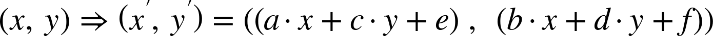

Example code and online extras for the O'Reilly Media book by Amelia Bellamy-Royds, Kurt Cagle, and Dudley Storey.
Transform Functions
The following 2D transformations functions are defined in the original SVG specifications, and are well supported. For best support when using them in the SVG transform attribute, the values should all be given as numbers, which are interpretted as user coordinates for lengths and as degrees for angles:
Complex transformation based on the specified matrix parameters

(x,y)⇒(x′,y′)=((a⋅x+c⋅y+e),(b⋅x+d⋅y+f))
All of the above functions, except rotate(a, cx, cy), may also be used in the transform style property, albeit with more limited browser support. However, when specifying transformations with stylesheets or inline style attributes, lengths and angles must have units. Use px for user coordinate lengths. Valid angle units are deg, rad, grad, and turn. Scaling factors are always numbers without units.
The following additional shorthand 2D transformation functions are defined in the CSS transformations module, allowing you to translate or scale along one axis without accidentally changing the other:
The spec also initially proposed a two-axis skew-like transformation, skew(a,b), but it isn’t equivalent to x and y skews one after the other. It’s been deprecated, although it’s still included for compatibility with earlier versions of the spec. It’s equivalent to matrix(1, tan(b), tan(a), 1, 0, 0)
The effects of the transform style property are also subject to the transform-origin, transform-style, transform-box, perspective, perspective-origin, and backface-visibility properties.
We describe transform-origin and transform-box in the book; they’re also included in the SVG Style Properties guide.
transform-style, perspective, and perspective-origin are covered in “The Next Dimension: 3D Transformations”. backface-visibility controls whether an element is visible when it is rotated completely around in 3D space—by default it is.